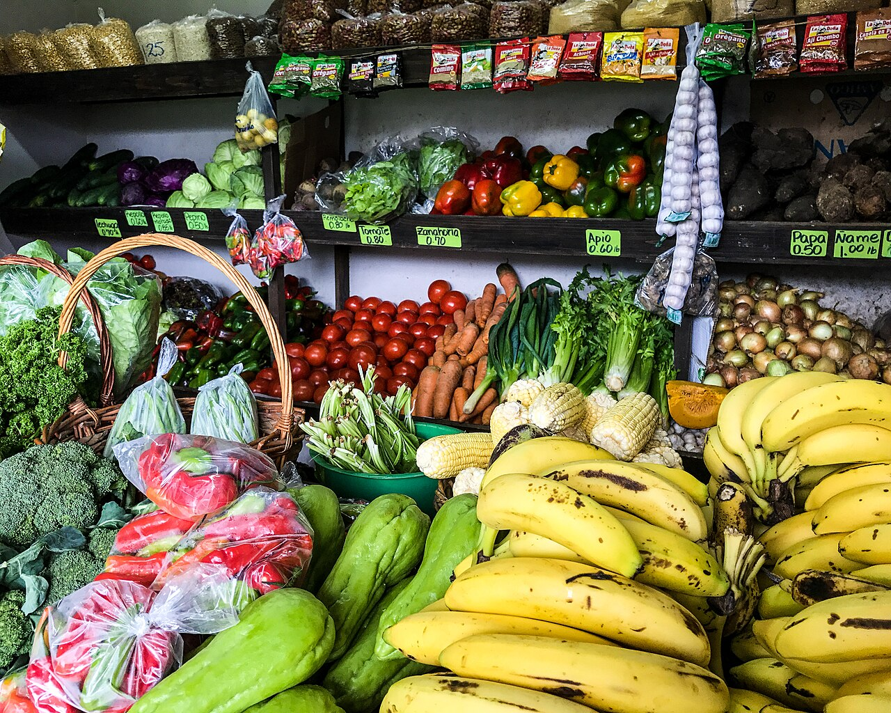

المملكة العربية السعودية — وزارة التعليم
كتاب العلوم — الجزء الأول من المقرر — طبعة ١٤٤٧ / ٢٠٢٥
الغذاء والتغذية
الصف الرابع الابتدائي
إعداد: نايف المطيري
موقع الدرس
أين نحن من الكتاب؟ ص ١٧٢
الوحدة الثالثة صحةُ الإنسانِ
الفصل الخامس التغذيةُ والصحةُ
الدرس الثاني الغذاءُ والتغذيةُ
السؤالُ الأساسيُّ: كيفَ يكونُ غذاؤُنا صحيًّا؟
أهداف التعلم
ماذا سأتعلَّمُ في هذا الدرسِ؟ أُعرِّفُ الغذاءَ المتوازنَ. أذكرُ مجموعاتِ الموادِّ الغذائيةِ السِّتَّ. أَصِفُ فائدةَ كلِّ مجموعةٍ وأذكرُ مصادرَها. أُبيِّنُ أهميةَ الماءِ للجسمِ. أُوضِّحُ ما الهرمُ الغذائيُّ وكيفَ يساعدُني. أُصنِّفُ الأطعمةَ حسبَ مجموعاتِها الغذائيةِ. أُوظِّفُ مهارةَ التصنيفِ . تمهيد
لنبدأْ بسؤالٍ لماذا لا نكتفي بنوعٍ واحدٍ منَ الطعامِ مهما كانَ لذيذًا؟
لأنَّ كلَّ نوعٍ منَ الطعامِ يعطي الجسمَ شيئًا مختلفًا يحتاجُ إليهِ.
معرفة سابقة
ما أعرفُهُ منْ قبلُ الغذاءُ الصحيُّ تجنُّبُ الإكثارِ منَ الدُّهونِ والسُّكَّريَّاتِ.
الماءُ نشربُ كمياتٍ كافيةً منهُ يوميًّا.
العاداتُ الصحيةُ غذاءٌ ونومٌ ورياضةٌ ونظافةٌ.
المفردات
مفرداتُ الدرسِ ص ١٧٤
الغذاءُ المتوازنُ تناولُ الكميةِ المناسبةِ منَ الأطعمةِ كلَّ يومٍ.
الكربوهيدراتُ المصدرُ الرئيسُ للطاقةِ في الجسمِ غالبًا.
البروتيناتُ تساعدُ الجسمَ على النموِ وتعويضِ الخلايا التالفةِ.
الدُّهونُ تساعدُ الخلايا على العملِ بشكلٍ سليمٍ وتزوِّدُ الجسمَ بالطاقةِ.
الفيتاميناتُ تساعدُ على المحافظةِ على صحةِ الجسمِ وبناءِ خلايا جديدةٍ.
الهرمُ الغذائيُّ دليلٌ يوضِّحُ أنواعَ الأطعمةِ التي يحتاجُها الإنسانُ يوميًّا.
مهارةُ القراءةِ في هذا الدرسِ: التصنيفُ .
أستكشف — نشاط استقصائي
كيفَ تُساعدُنا مُلصقاتُ المنتجاتِ الغذائيةِ على اختيارِ الغذاءِ المتوازنِ؟ ص ١٧٣ — نشاط الكتاب
الهدفُ: أحدِّدُ الأطعمةَ التي تُشكِّلُ غذاءً مُتوازنًا لصحةِ الجسمِ منْ خلالِ مُلصقاتِ مُنتجاتٍ غذائيةٍ.
أحتاجُ إلى: ثلاثِ مُلصقاتٍ لثلاثِ موادَّ غذائيةٍ مُختلفةٍ.
ألاحظُ: بعدَ فحصِ المُلصقاتِ الثلاثةِ، وقراءةِ معلوماتِها الغذائيةِ، سجِّلْ مُلاحظاتِكَ كما هوَ مُوضَّحٌ أدناهُ.أتواصلُ: أناقشُ زملائي، حولَ ما قرأتُهُ في مُلصقاتِ المنتجاتِ الغذائيةِ.استنتجْ. أيُّ الأطعمةِ تُشكِّلُ غذاءً مُتوازنًا لصحَّتي. ولماذا؟م الكربوهيدراتُ الدُّهونُ البروتينُ الأملاحُ الماءُ والفيتاميناتُ ١ ٢ ٣
أستكشف — نشاط استقصائي
أستنتجُ · أستكشفُ أكثرَ ص ١٧٣ — أسئلة الكتاب
٣. استنتجْ. أيُّ الأطعمةِ تُشكِّلُ غذاءً مُتوازنًا لصحَّتي. ولماذا؟
إظهار الإجابة سؤال الكتاب — ص ١٧٣ إجابةٌ نموذجيةٌ مقترحةٌ: الطعامُ الذي يُشكِّلُ غذاءً متوازنًا هوَ الذي يحتوي على جميعِ أنواعِ الغذاءِ التي يحتاجُ إليها الجسمُ وبكمياتٍ مناسبةٍ — كربوهيدراتٍ وبروتيناتٍ ودهونٍ وفيتاميناتٍ وأملاحٍ وماءٍ — لا التي تحتوي على نوعٍ واحدٍ فقط أوْ على كميةٍ كبيرةٍ منَ الدُّهونِ والسُّكَّريَّاتِ. ولذلكَ أقارنُ الملصقاتِ الثلاثةَ وأختارُ الأقربَ إلى هذا التوازنِ.
أستكشفُ أكثرَ. اخترْ ثلاثَ موادَّ غذائيةٍ في منزلِكَ وتفحَّصْ محتوى المُنتجاتِ الغذائيةِ الموجودةِ عليها.
أطلبُ إذنَ وليِّ أمري قبلَ فتحِ أيِّ عبوةٍ، وأكتفي بقراءةِ المُلصقِ منْ خارجِها.
الشرح والتفسير
الغذاءُ وصحةُ الجسمِ ص ١٧٤
توجدُ الموادُّ الغذائيةُ في الطعامِ الذي تتناولُهُ، وهيَ ضروريةٌ لنموِ الجسمِ، وإمدادِهِ بالطاقةِ، والمحافظةِ عليهِ سليمًا.
إنَّ تناولَ الكميةِ المناسبةِ منَ الأطعمةِ كلَّ يومٍ يساعدُ على الحفاظِ على صحةِ جسمِكَ ونموِّهِ بالشكلِ السليمِ ويُسمَّى الغذاءُ عندئذٍ غذاءً مُتوازنًا ، وتكونُ الوجبةُ متوازنةً عندَما تحتوي على جميعِ أنواعِ الغذاءِ الذي يحتاجُ إليهِ الجسمُ وبكمياتٍ مناسبةٍ.
ويتضمَّنُ الطعامُ ستَّ مجموعاتٍ منَ الموادِّ الغذائيةِ وهيَ: الكربوهيدراتُ والبروتيناتُ والدُّهونُ والفيتاميناتُ والأملاحُ والماءُ.
الشرح والتفسير
مجموعاتُ الموادِّ الغذائيةِ (١) ص ١٧٥
الكربوهيدراتُ هيَ المصدرُ الرئيسُ للطاقةِ في الجسمِ غالبًا.مصادرُها: رقائقُ الذُّرةِ، والحبوبُ، والخبزُ، والتمرُ والبطاطسُ، والأرزُّ.
البروتيناتُ تساعدُ الجسمَ على النموِ وتعويضِ الخلايا التالفةِ في الجسمِ.مصادرُها: البقولياتُ، واللحومُ، والأسماكُ، والدَّواجنُ، والبيضُ، والجبنُ والحليبُ.
الدُّهونُ: تُساعدُ الخلايا على العملِ بشكلٍ سليمٍ، كما تُزوِّدُ الجسمَ بالطاقةِ، وتمنحُهُ الدَّفءَ وتُساعدُهُ على الاستفادةِ منَ الغذاءِ وتخزينِ الفيتاميناتِ، ويُسبِّبُ الإكثارُ منْ تناولِ الوجباتِ الغذائيةِ الغنيَّةِ بالدُّهونِ الإصابةَ بالسُّمنةِ وبأمراضِ القلبِ.مصادرُها: اللحومُ وزيوتُ الأسماكِ، والزُّيوتُ النَّباتيَّةُ.
أختبر نفسي
أسئلةُ الكتابِ ص ١٧٥
أصنِّفُ: الموادَّ الغذائيةَ التاليةَ: (بيضٌ – سمكٌ – أرزٌّ – خبزٌ) إلى مجموعتينِ: مجموعةِ الكربوهيدراتِ، ومجموعةِ البروتيناتِ.
إظهار الإجابة سؤال الكتاب — ص ١٧٥ مجموعةُ الكربوهيدراتِ: الأرزُّ – الخبزُ.مجموعةُ البروتيناتِ: البيضُ – السمكُ.
التفكيرُ الناقدُ. ماذا يحدثُ للجسمِ إذا اعتمدَ الإنسانُ في غذائِهِ على صنفٍ واحدٍ فقط منَ الموادِّ الغذائيةِ؟
إظهار الإجابة سؤال الكتاب — ص ١٧٥ لنْ يكونَ غذاؤُهُ متوازنًا؛ لأنَّ الوجبةَ المتوازنةَ تحتوي على جميعِ أنواعِ الغذاءِ بكمياتٍ مناسبةٍ. فينقصُ الجسمَ ما تُقدِّمُهُ المجموعاتُ الأخرى: فقدْ يضعفُ النموُّ ولا تُعوَّضُ الخلايا التالفةُ عندَ نقصِ البروتيناتِ، وتقلُّ الطاقةُ عندَ نقصِ الكربوهيدراتِ، ويضعفُ بناءُ العظامِ عندَ نقصِ الأملاحِ، ويُصابُ بالأمراضِ عندَ نقصِ الفيتاميناتِ.
الشرح والتفسير
مجموعاتُ الموادِّ الغذائيةِ (٢) ص ١٧٦
الفيتاميناتُ تُساعدُ الفيتاميناتُ على المحافظةِ على صحةِ الجسمِ، وبناءِ خلايا جديدةٍ، والوقايةِ منَ الأمراضِ مثلَ: فيتامينِ ج وفيتامين د.مصادرُها: الحبوبُ والفواكهُ، والخضرواتُ، والحليبُ.
الأملاحُ المعدنيةُ تساعدُ على تكوينِ العظامِ وخلايا الدَّمِ الجديدةِ ومنها: الكالسيومُ والحديدُ.مصادرُها: اللحومُ ومُنتجاتُ الألبانِ والخُضرَواتُ والحبوبُ.
أختبر نفسي · أقرأ الصورة
أسئلةُ الكتابِ ص ١٧٦
أصنِّفُ: الموادَّ الغذائيةَ التاليةَ (الأرزُّ – الزبدةُ – الزيتُ – البطاطسُ) إلى مجموعتينِ: (مجموعةُ الكربوهيدراتِ، ومجموعةُ الدهونِ).
إظهار الإجابة سؤال الكتاب — ص ١٧٦ مجموعةُ الكربوهيدراتِ: الأرزُّ – البطاطسُ.مجموعةُ الدهونِ: الزبدةُ – الزيتُ.
التفكيرُ الناقدُ. لماذا يُعدُّ تناولُ الفيتاميناتِ مهمًّا لصحةِ الإنسانِ؟
إظهار الإجابة سؤال الكتاب — ص ١٧٦ لأنَّها تُساعدُ على المحافظةِ على صحةِ الجسمِ، وبناءِ خلايا جديدةٍ، والوقايةِ منَ الأمراضِ.
أقرأُ الصورةَ — صنِّفْ: الموادَّ الغذائيةَ في الصورةِ المُجاورةِ حسبَ المجموعاتِ الغذائيةِ. إرشادٌ: توجدُ الموادُّ الغذائيةُ في الطعامِ الذي نتناولُهُ.
إظهار الإجابة سؤال الكتاب — ص ١٧٦ إجابةٌ نموذجيةٌ مقترحةٌ لصورةِ وجبةِ المدرسةِ: الخبزُ ← كربوهيدراتٌ. الخسُّ والطماطمُ ← فيتاميناتٌ وأملاحٌ معدنيةٌ. المُكسَّراتُ والفواكهُ المجفَّفةُ ← دهونٌ وبروتيناتٌ وأملاحٌ. زجاجةُ الماءِ ← الماءُ.
الشرح والتفسير
الماءُ ص ١٧٧
يُشكِّلُ الماءُ ثُلثي جسمِ الإنسانِ تقريبًا، فهوَ يُساعدُ الجسمَ على الهضمِ وعلى التخلُّصِ منَ الفضلاتِ والمحافظةِ على درجةِ حرارةِ الجسمِ ثابتةً.
مصادرُهُ: شربُ الماءِ النَّقيِّ والسوائلِ المختلفةِ، كالعصيراتِ والحليبِ وتناولُ الخضرواتِ والفواكهِ.
نشاط
تحليلُ غذائي اليوميِّ ص ١٧٧ — نشاط الكتاب
أعدَّ قائمةً بالأطعمةِ التي تناولتَها خلالَ ٢٤ ساعةً. موضحًا عليها أهمَّ مكوناتِها الغذائيةِ، وفائدتَها للجسمِ وفقًا للجدولِ التالي: أيُّ أنواعِ الأطعمةِ تفضلُها أكثرَ منْ غيرِها؟ ولماذا؟ استنتجْ. أيُّها أفضلُ منْ حيثُ القيمةِ الغذائيةِ لجسمِكَ؟نوعُ الطعامِ مكوناتُهُ الغذائيةُ فائدتُهُ للجسمِ
نشاط
إجابةُ سؤالِ النشاطِ ص ١٧٧ — سؤال الكتاب
٣. استنتجْ. أيُّها أفضلُ منْ حيثُ القيمةِ الغذائيةِ لجسمِكَ؟
إظهار الإجابة سؤال الكتاب — ص ١٧٧ إجابةٌ نموذجيةٌ مقترحةٌ: أفضلُها الأطعمةُ التي تُقدِّمُ للجسمِ أكثرَ منْ مجموعةٍ غذائيةٍ معًا وتقتربُ منَ الغذاءِ المتوازنِ — مثلَ وجبةٍ فيها خبزٌ (كربوهيدراتٌ) وبيضٌ أوْ حليبٌ (بروتيناتٌ وأملاحٌ) وخضراواتٌ وفواكهُ (فيتاميناتٌ وماءٌ). أمَّا الأطعمةُ الغنيَّةُ بالدُّهونِ والسُّكَّريَّاتِ فقط فقيمتُها الغذائيةُ أقلُّ وقدْ تُسبِّبُ السُّمنةَ.
الشرح والتفسير
الهرمُ الغذائيُّ ص ١٧٨
لا توجدُ جميعُ الموادِّ الغذائيةِ في نوعٍ واحدٍ منَ الأطعمةِ، لذا يجبُ أنْ يكونَ الطعامُ الذي نتناولُهُ مشتملًا على جميعِ الموادِّ الغذائيةِ بكمياتٍ محدَّدةٍ باستخدامِ الهرمِ الغذائيِّ وهوَ دليلٌ يوضِّحُ أنواعَ الأطعمةِ التي يحتاجُها الإنسانُ بشكلٍ يوميٍّ لبناءِ جسمٍ يتمتَّعُ بصحةٍ جيدةٍ.
حيثُ يقسِّمُ الأطعمةَ إلى خمسِ مجموعاتٍ رئيسةٍ وهيَ:
٢ مجموعةُ الخضرواتِ والفواكهِ
٣ مجموعةُ اللحومِ والأسماكِ
٤ مجموعةُ الحليبِ ومُشتقَّاتِهِ
الشرح والتفسير
كيفَ يساعدُنا الهرمُ الغذائيُّ؟ ص ١٧٨
يُساعدُنا الهرمُ الغذائيُّ على اختيارِ الطعامِ الصحيِّ بأنْ نتناولَ طعامًا أكثرَ منَ القطاعِ الأكبرِ منَ الهرمِ، ونتناولُ طعامًا أقلَّ منَ القطاعِ الأصغرِ منَ الهرمِ.
الهرمُ الغذائيُّ منْ أسفلَ إلى أعلى
القاعدةُ (الأكبرُ)
مجموعةُ الحبوبِ
ثمَّ
اللحومُ والأسماكُ الحليبُ ومُشتقَّاتُهُ
القمةُ (الأصغرُ)
مجموعةُ الدُّهونِ
سؤال تحقُّق
أُصنِّفُ الغذاءَ ص ١٧٥ — ١٧٧
أقرأُ اسمَ الطعامِ، ثمَّ أختارُ المجموعةَ الغذائيةَ التي يُمثِّلُها.
— —
كربوهيدراتٌ بروتيناتٌ دُهونٌ فيتاميناتٌ وأملاحٌ
أبدأُ التصنيفَ.
النتيجة: ٠ / ٠
إعادةُ النشاطِ
أختبر نفسي
أسئلةُ الكتابِ ص ١٧٨
أصنِّفُ. البروتيناتِ – الدُّهونَ – الكربوهيدراتِ – الأملاحَ المعدنيةَ إلى مجموعتينِ حسبَ فوائدِها: إمدادُ الجسمِ بالطاقةِ – النموُ وبناءُ العظامِ.
إظهار الإجابة سؤال الكتاب — ص ١٧٨ إمدادُ الجسمِ بالطاقةِ: الكربوهيدراتُ – الدُّهونُ.النموُ وبناءُ العظامِ: البروتيناتُ – الأملاحُ المعدنيةُ.
التفكيرُ الناقدُ. لماذا يُعدُّ الهرمُ الغذائيُّ مُهمًّا في تناولِ الغذاءِ المُتوازنِ؟
إظهار الإجابة سؤال الكتاب — ص ١٧٨ لأنَّ الموادَّ الغذائيةَ لا توجدُ كلُّها في نوعٍ واحدٍ منَ الأطعمةِ؛ فالهرمُ الغذائيُّ دليلٌ يوضِّحُ أنواعَ الأطعمةِ التي يحتاجُها الإنسانُ يوميًّا وكمياتِها، فيساعدُنا على أنْ نتناولَ أكثرَ منَ القطاعِ الأكبرِ وأقلَّ منَ القطاعِ الأصغرِ، فتكونُ وجبتُنا مشتملةً على جميعِ الموادِّ الغذائيةِ بكمياتٍ مناسبةٍ.
ملخص مصور
ملخصُ الدرسِ ص ١٧٩
١ يتكوَّنُ الغذاءُ الصحيُّ المتوازنُ منَ الكربوهيدراتِ والبروتيناتِ والدُّهونِ والأليافِ والأملاحِ المعدنيةِ والماءِ.
٢ تساعدُ البروتيناتُ على بناءِ خلايا الجسمِ، كما تزوِّدُ الكربوهيدراتُ والدُّهونُ الجسمَ بالطاقةِ اللازمةِ للقيامِ بالأنشطةِ الحياتيةِ اليوميةِ.
٣ الهرمُ الغذائيُّ: هوَ دليلٌ غذائيٌّ على شكلِ مثلثٍ يحدِّدُ حاجاتِ الأفرادِ الغذائيةَ التي يجبُ تناولُها.
المطويات — أنظِّمُ أفكاري: أعملُ مطويةً ألخِّصُ فيها ما تعلَّمتُهُ عنِ الموادِّ الغذائيةِ: الكربوهيدراتُ · البروتيناتُ · الدُّهونُ · الفيتاميناتُ · الماءُ · الأملاحُ المعدنيةُ.
خريطة المفاهيم
أنظِّمُ مفاهيمَ الدرسِ الغذاءُ والتغذيةُ
طاقةٌ
الكربوهيدراتُ الدُّهونُ
بناءٌ ونموٌّ
البروتيناتُ الأملاحُ المعدنيةُ
حمايةٌ ووقايةٌ
الفيتاميناتُ الماءُ
دليلٌ للاختيارِ
الهرمُ الغذائيُّ الغذاءُ المتوازنُ
مراجعة الدرس
أفكِّرُ وأتحدَّثُ وأكتبُ ص ١٧٩ — أسئلة الكتاب
١. المفرداتُ. ………… يُشكِّلُ ثُلثي جسمِ الإنسانِ تقريبًا، ويساعدُ على التخلُّصِ منَ الفضلاتِ ويحافظُ على درجةِ حرارةِ الجسمِ.
إظهار الإجابة سؤال الكتاب — ص ١٧٩ الماءُ .
٢. أصنِّفُ: مكوناتُ فطيرةِ التُّفاحِ: الدَّقيقُ – الزبدةُ – البيضُ – التُّفاحُ – السُّكرُ – الماءُ، حسبَ مجموعاتِ الموادِّ الغذائيةِ التي تنتمي إليها.
إظهار الإجابة سؤال الكتاب — ص ١٧٩ الدَّقيقُ ← الكربوهيدراتُ · السُّكرُ ← الكربوهيدراتُ
٣. التفكيرُ الناقدُ: لماذا يجبُ شربُ الحليبِ بشكلٍ عامٍّ، وفي السَّنواتِ الأولى منْ عُمرِ الطفلِ بشكلٍ خاصٍّ؟
إظهار الإجابة سؤال الكتاب — ص ١٧٩ لأنَّ الحليبَ منْ مصادرِ البروتيناتِ التي تساعدُ على النموِ وتعويضِ الخلايا التالفةِ، ومنْ مصادرِ الأملاحِ المعدنيةِ كالكالسيومِ التي تساعدُ على تكوينِ العظامِ وخلايا الدَّمِ الجديدةِ، وكذلكَ منْ مصادرِ الفيتاميناتِ. والطفلُ في سنواتِهِ الأولى سريعُ النموِ فيحتاجُ إلى ذلكَ أكثرَ.
مراجعة الدرس
أختارُ الإجابةَ الصحيحةَ · السؤالُ الأساسيُّ ص ١٧٩ — أسئلة الكتاب
٤. أختارُ الإجابةَ الصحيحةَ. تُساعدُ الجسمَ على النموِ وتعويضِ الخلايا التالفةِ فيهِ.
إظهار الإجابة سؤال الكتاب — ص ١٧٩ جـ - البروتيناتُ .
٥. السؤالُ الأساسيُّ. كيفَ يكونُ غذاؤُنا صحيًّا؟
إظهار الإجابة سؤال الكتاب — ص ١٧٩ يكونُ غذاؤُنا صحيًّا عندَما يكونُ متوازنًا ؛ أيْ نتناولُ الكميةَ المناسبةَ منَ الأطعمةِ كلَّ يومٍ، وتحتوي الوجبةُ على جميعِ أنواعِ الغذاءِ التي يحتاجُها الجسمُ وبكمياتٍ مناسبةٍ: الكربوهيدراتِ والبروتيناتِ والدُّهونِ والفيتاميناتِ والأملاحِ والماءِ. ونستعينُ بالهرمِ الغذائيِّ فنتناولُ أكثرَ منَ القطاعِ الأكبرِ وأقلَّ منَ القطاعِ الأصغرِ.
مراجعة الدرس
العلومُ والكتابةُ · العلومُ والفنُّ ص ١٧٩ — أسئلة الكتاب
العلومُ والكتابةُ — أهميةُ الغذاءِ. أكتبُ مقالًا تُوضِّحُ فيهِ أهميةَ الغذاءِ الصحيِّ المُتوازنِ، واعرضْهُ على زملائِكَ في الصفِّ.
إظهار الإجابة سؤال الكتاب — ص ١٧٩ إجابةٌ نموذجيةٌ مقترحةٌ: الغذاءُ الصحيُّ المتوازنُ ضروريٌّ لنموِ الجسمِ وإمدادِهِ بالطاقةِ والمحافظةِ عليهِ سليمًا. فالكربوهيدراتُ والدُّهونُ تمدُّ الجسمَ بالطاقةِ، والبروتيناتُ والأملاحُ تبني الخلايا والعظامَ، والفيتاميناتُ تقي منَ الأمراضِ، والماءُ يساعدُ على الهضمِ والتخلُّصِ منَ الفضلاتِ. ولا توجدُ هذهِ الموادُّ كلُّها في نوعٍ واحدٍ منَ الطعامِ؛ لذا نستعينُ بالهرمِ الغذائيِّ في اختيارِ وجباتِنا.
العلومُ والفنُّ — لوحةُ صُورٍ. أجمعُ صُورًا لأطعمةٍ مختلفةٍ، وصنِّفْها حسبَ المجموعةِ الغذائيةِ التي تنتمي إليها ثمَّ نظِّمْها على لوحةٍ.
إظهار الإجابة سؤال الكتاب — ص ١٧٩ إجابةٌ نموذجيةٌ مقترحةٌ: أُقسِّمُ اللوحةَ إلى ستةِ أعمدةٍ بعناوينِ: الكربوهيدراتِ (خبزٌ · أرزٌّ · تمرٌ · بطاطسُ)، البروتيناتِ (لحمٌ · سمكٌ · بيضٌ · بقولياتٌ)، الدُّهونِ (زيتٌ · زبدةٌ)، الفيتاميناتِ (فواكهُ · خضرواتٌ)، الأملاحِ المعدنيةِ (ألبانٌ · خضرواتٌ · حبوبٌ)، الماءِ (ماءٌ · عصيراتٌ). ثمَّ ألصقُ كلَّ صورةٍ في عمودِها.
تقويم ختامي
أسئلةٌ تدريبيةٌ إضافيةٌ (منْ إعدادِ المعلمِ) المصدرُ الرئيسُ للطاقةِ في الجسمِ غالبًا:
البروتيناتُ الكربوهيدراتُ الفيتاميناتُ الأملاحُ
عددُ مجموعاتِ الموادِّ الغذائيةِ في الطعامِ:
ثلاثٌ أربعٌ خمسٌ ستٌّ
يُشكِّلُ الماءُ منْ جسمِ الإنسانِ تقريبًا:
نصفَهُ ثُلثيهِ رُبعَهُ كلَّهُ
تقويم ختامي
أسئلةٌ تدريبيةٌ إضافيةٌ (منْ إعدادِ المعلمِ) منَ الأملاحِ المعدنيةِ التي تساعدُ على تكوينِ العظامِ:
الكالسيومُ فيتامين ج البروتينُ الزيتُ
عددُ المجموعاتِ الرئيسةِ في الهرمِ الغذائيِّ:
ثلاثٌ أربعٌ خمسٌ ستٌّ
الإكثارُ منَ الوجباتِ الغنيَّةِ بالدُّهونِ قدْ يُسبِّبُ:
السُّمنةَ وأمراضَ القلبِ قوةَ العظامِ الوقايةَ منَ الأمراضِ سرعةَ النموِ
بطاقة خروج
قبلَ أنْ نُنهيَ الدرسَ أذكرُ ثلاثًا منْ مجموعاتِ الموادِّ الغذائيةِ ومصدرًا لكلٍّ منها. لماذا نحتاجُ إلى الماءِ؟ أُخطِّطُ وجبةً متوازنةً لغدي. الفكرةُ الرئيسةُ: الغذاءُ الصحيُّ متوازنٌ يحتوي على المجموعاتِ الغذائيةِ السِّتِّ بكمياتٍ مناسبةٍ، والهرمُ الغذائيُّ دليلُنا إليهِ.
إثراء اختياري
لوحةٌ تفاعلية: الهرم الغذائي إثراء اختياري الدهون والحلويات — أقلُّ ما يمكن الدهون والحلويات — أقلُّ ما يمكن اللحوم والبقوليات والألبان اللحوم والبقوليات والألبان الفواكه والخضراوات الفواكه والخضراوات الحبوب — الأساس الحبوب — الأساس تقلُّ الطاقة كلَّما ارتفعنا مستوًى — ينتقل نحو ١ / ١٠ فقط تقلُّ الطاقة كلَّما ارتفعنا مستوًى — ينتقل نحو ١ / ١٠ فقط الهرم الغذائي: نُكثِر من القاعدة ونُقلِّل من القمة.
الحبوب الفواكه والخضراوات البروتينات والألبان الدهون والحلويات
اضغط على أيِّ عنصرٍ في الرسم، أو تابع الخطوات بالترتيب.
◀ السابق التالي ▶
إثراء اختياري
معرضٌ مصوَّر: مجموعاتٌ غذائية إثراء اختياري الحبوب خبزٌ وأرزٌ ومعكرونة — طاقة
الخضراوات فيتاميناتٌ وأليافٌ ضرورية
البقوليات فولٌ وعدسٌ وحمُّص — بروتين
الماء لا يُستغنى عنه في كلِّ وجبة
الغذاء المتوازن يجمع بين المجموعات كلِّها بمقاديرَ مناسبة.
إثراء اختياري
هل تعلم؟ — طعامٌ يبني جسمك إثراء اختياري ١
طعامك ليس وقودًا فقط؛ إنه أيضًا موادُّ بناء لعظامك وعضلاتك وخلاياك الجديدة.
٢
الألياف في الخضراوات والفواكه تساعد الجهاز الهضميَّ على العمل بانتظام.
٣
لا يوجد غذاءٌ واحدٌ يجمع كلَّ ما يحتاجه الجسم؛ ولهذا كان التنوُّع هو سرَّ التغذية السليمة.
التوازن لا الكثرة هو معيار الغذاء الجيد.
إثراء اختياري
بطاقات المفردات — اقلبها! إثراء اختياري الغذاءُ المتوازنُ اضغط لترى المعنى
تناولُ الكميةِ المناسبةِ منَ الأطعمةِ كلَّ يومٍ.
الكربوهيدراتُ اضغط لترى المعنى
المصدرُ الرئيسُ للطاقةِ في الجسمِ غالبًا.
البروتيناتُ اضغط لترى المعنى
تساعدُ الجسمَ على النموِ وتعويضِ الخلايا التالفةِ.
الدُّهونُ اضغط لترى المعنى
تساعدُ الخلايا على العملِ بشكلٍ سليمٍ وتزوِّدُ الجسمَ بالطاقةِ.
الفيتاميناتُ اضغط لترى المعنى
تساعدُ على المحافظةِ على صحةِ الجسمِ وبناءِ خلايا جديدةٍ.
الهرمُ الغذائيُّ اضغط لترى المعنى
دليلٌ يوضِّحُ أنواعَ الأطعمةِ التي يحتاجُها الإنسانُ يوميًّا.
إظهار كل المعاني
اضغط على البطاقة لترى المعنى.
إثراء اختياري
تحدِّي الوقت — ٤٥ ثانية إثراء اختياري الوقت النقاط ▶ ابدأ التحدي
اضغط «ابدأ التحدي» لتبدأ.
أجب عن أكبر عددٍ ممكنٍ من الأسئلة قبل انتهاء الوقت.
إثراء اختياري
مشروعي الصغير إثراء اختياري صمِّم وجبة خطِّط لوجبة إفطارٍ متوازنةٍ تجمع بين الحبوب والبروتين والفاكهة، واعرضها على زملائك.
سؤال تفكير لماذا يُنصَح بتقليل المشروبات المحلَّاة واستبدال الماء بها؟
🔎 إثراء مصوّر
عدسة العلوم ألاحظ · أتساءل · أفسّر
ما أوجه التنوع بين الفواكه والخضراوات المعروضة، وكيف يفيد تنوع الطعام الجسم؟

🔍 تكبير الصورة فواكه وخضراوات متنوعة في سوق؛ يوفّر تنوّع الطعام عناصر غذائية مختلفة. الصورة: FranHogan · مصدر الصورة · CC BY-SA 4.0 · نسخة مصغرة دون تغيير المحتوى
👁️ يحتوي الطعام الواحد غالبًا على أكثر من مادة غذائية؛ فالعدس مثلًا يوفر بروتينًا وكربوهيدرات وأليافًا.
💡 تحتاج الخلايا إلى البروتينات للنمو والإصلاح، وتستفيد من الكربوهيدرات والدهون في الحصول على الطاقة.
🥗 يساعد تنوع الأطعمة على توفير مواد غذائية مختلفة، مع مراعاة الكمية والاحتياجات الفردية.
مراجع الإثراء للمعلم
🧩 رسم تفاعلي
مواد غذائية ووظائف متنوعة أربط الأفكار
اضغط عناصر الرسم لاكتشاف معناها والعلاقة بينها.
1 🍞 كربوهيدرات • 2 🫘 بروتينات • 3 🫒 دهون • 4 🥕 فيتامينات ومعادن • 5 💧 ماء
الأطعمة تضم خليطًا من المواد؛ لا تعني الرموز أن كل طعام يحتوي مادة واحدة فقط.
🍞 كربوهيدرات من مصادر الطاقة
🧪 مختبر الاستكشاف
وسّع تنوع الاختيارات أتوقّع · أجرّب · أقارن
كيف يزيد تنوع مصادر الطعام عند إضافة مجموعات مختلفة إلى مثال الوجبة؟
تركيب المثال
خبز فقط خبز وعدس خبز وعدس وخضار
▶ شغّل المحاكاة ↺ إعادة
العدد لا يقيس جودة الغذاء كاملة ولا يعني وجبة مكتملة الاحتياجات؛ لا يحسب حصصًا أو سعرات أو حمية شخصية.
عدد فئات الطعام المضافة في المثال: حبوب وبقول وخضار
🍽️ 🍽️ 🍽️ 🍽️ 🍽️ 🍽️ 🍽️ 🍽️ 🍽️ 🍽️
فئة طعام واحدة
علامة واحدة لفئة الحبوب.
الخبز يمثل فئة الحبوب في المثال؛ يمد بمواد غذائية لكنه لا يمثل وحده جميع ما يحتاجه الجسم.
توقّع النتيجة، ثم غيّر الحالة وشغّل المحاكاة.
🤔 هل زيادة كمية الخبز وحده تضيف فئة غذاء جديدة مثل إضافة العدس؟
انْتَهَى الدَّرْسُ إعداد: نايف المطيري
العلوم — الصف الرابع الابتدائي — الجزء الأول من المقرر
↺ البداية
▶ السابق
التالي ◀
إظهار كل الإجابات
⛶ ملء الشاشة
إعداد: نايف المطيري